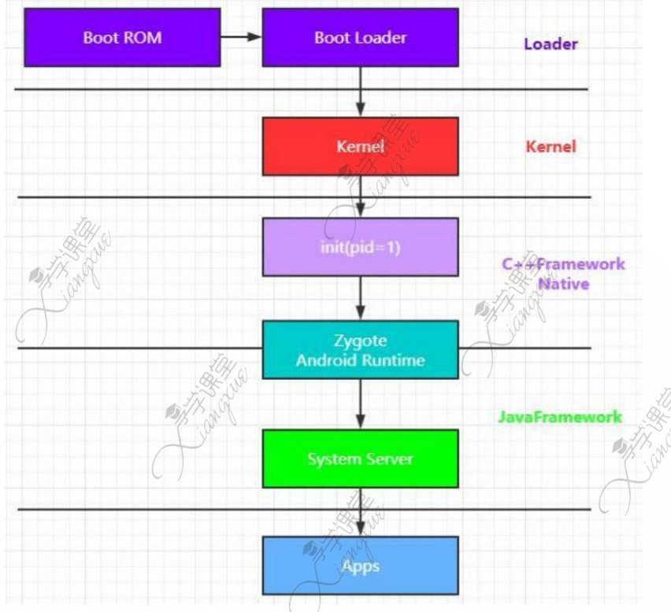
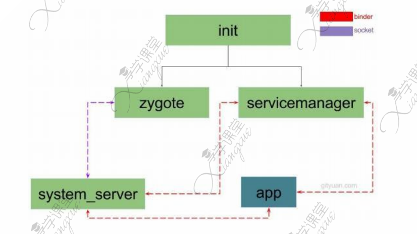
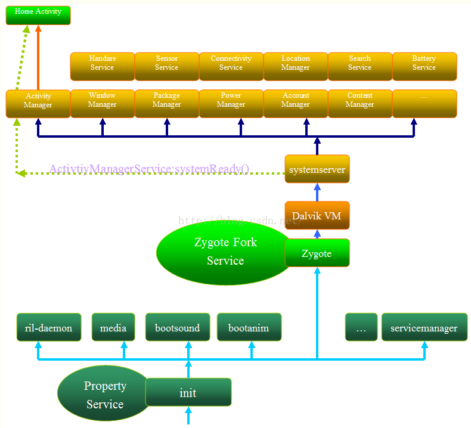

Android系统启动的流程

Step1：启动电源及系统启动
当电源按下，引导芯片代码开始从预定义的地方（固化在ROM）开始执行。加载引导程序到RAM，然后执行。
Step2：引导程序
引导程序是在Android操作系统开始运行前的一个小程序。引导程序是运行的第一个程序，因此它是针对特定的主板与芯片的。设备制造商要么使用很受欢迎的引导程序比如redboot、uboot、qibootloader或者开发自己的引导程序，它不是Android操作系统的一部分。引导程序是OEM厂商或者运营商加锁和限制的地方。
引导程序分两个阶段执行：
第一个阶段，检测外部的RAM以及加载对第二阶段有用的程序；
第二个阶段，引导程序设置网络、内存等等。这些对于运行内核是必要的，为了达到特殊的目标，引导程序可以根据配置参数或者输入数据设置内核。
Android引导程序可以在\bootable\bootloader\legacy\usbloader找到。传统的加载器包含两个文件，需要在这里说明：
init.s初始化堆栈，清零BBS段，调用main.c的_main()函数；
main.c初始化硬件（闹钟、主板、键盘、控制台），创建Linux标签
Step3：内核
Android内核与桌面Linux内核的启动方式差不多。内核启动时，设置缓存、被保护存储器、计划列表，加载驱动。当内核完成系统设置，它首先在系统文件中寻找“init”文件，然后启动root进程或者系统的第一个进程
Step4：init进程
init进程时Linux系统中用户空间的第一个进程，进程号固定为1。Kernel启动后，在用户空间启动init进程，并调用init中的main() 方法执行init进程的职责。
Step5：启动Launcher App
init进程分析

读图：
- init进程启动zygote和servicemanager
- zygote利用socket与system_server进行联系
- system_server\servicemanager\app三者之间利用binder进行联系
init进程的操作：
- 创建和挂载启动所需要的文件目录
- 初始化和启动属性服务
- 解析init.rc配置文件并启动Zygote进程
精炼源码分析（以后在更新的源码上再看一次）：
ueventd主要负责设备节点的创建、权限设定等一系列工作；watchdogd用于系统出问题时重启系统
如果参数同时从命令行和DT传过来，DT的优先级总是大于命令行的
在 Android 中，"Device Tree"（设备树）通常是指 Android 操作系统的设备树机制。设备树是一种用于描述硬件设备和其连接关系的数据结构，它被广泛用于嵌入式系统中，包括 Android 设备。
Android 设备树的主要目的是为了在 Linux 内核中动态描述和配置硬件设备。设备树通常以一种类似于 XML 的结构进行描述，其中包含了有关系统硬件、设备、中断、总线等信息的详细描述。
主要的 Android 设备树文件是
dts（设备树源）文件，它们编译成dtb（设备树二进制）文件，然后由 Linux 内核加载并解释。设备树的使用允许 Android 操作系统在多种硬件平台上运行，而无需为每个平台定制和编译一个特定的内核。Android 设备树包括以下方面的信息：
- 硬件组件： 描述了处理器、内存、外设等硬件组件的信息。
- 中断： 描述了系统中各种中断的分配和连接。
- 总线： 描述了系统中使用的总线，如 I2C、SPI、PCI 等。
- 设备： 描述了连接到系统的各种设备，如传感器、摄像头、显示器等。
通过使用设备树，Android 能够更容易地适应各种硬件配置，使其更加灵活和可移植。
init.rc解析
服务启动机制
- system/core/init/init.c文件main函数中parse_config_file(init.rc)读取并解析init.rc文件内容。将service信息放置到system/core/init/init_parser.cpp的service_list中
- system/core/init/init.c文件main函数继续执行restart_servie_if_needed(…) -> service_start(…) -> Execve(…)建立service进程；
为了让大伙看得更明白，上个图先《总体启动框架图》： 
init.rc 简介
目前Linux有很多通讯机制可以在用户空间和内核空间之间交互，例如设备驱动文件（位于/dev目录中）、内存文件（/proc、/sys目录等）。了解Linux的同学都应该知道Linux的重要特征之一就是一切都是以文件的形式存在的，例如，一个设备通常与一个或多个设备文件对应。这些与内核空间交互的文件都在用户空间，所以在Linux内核装载完，需要首先建立这些文件所在的目录。而完成这些工作的程序就是本文要介绍的init。Init是一个命令行程序。其主要工作之一就是建立这些与内核空间交互的文件所在的目录。当Linux内核加载完后，要做的第一件事就是调用init程序，也就是说，init是用户空间执行的第一个程序。
尽管init完成的工作不算很多，不过代码还是非常复杂的。Init程序并不是由一个源代码文件组成的\，而是由一组源代码文件的目标文件链接而成的。这些文件位于如下的目录。
需要明白的是，这些init.rc只是语法文件，并不是程序，真正的入口则是上面提到的system/core/init/init.c 因为init.c文件比较大，在文章的第二部分我会简要的通过main函数分析init启动流程；
init.rc有两个，分别位于： ./system/core/rootdir/init.rc ./bootable/recovery/etc/init.rc 从目录上大致可以猜测，这两个init.rc使用场景不一样，一个是刷机用到的，也就是进入recorvery模式，一个是正常启动用到的；我们这里重点分析的是上面那个，也是init.c关联的那个；
init.rc语法结构解析
要了解init.rc是怎么解析的，我们需要先看看说明文档，说明文档在，当然也可以看下热心网友的中文对照版本； init.rc位于/bootable/recovery/etc/init.rc
Android初始化语言包含了四种类型的声明： Actions（行为）、Commands（命令）、Services（服务）和Options（选项）
所有这些都是以行为单位的，各种记号由空格来隔开。 C语言风格的反斜杠号可用于在记号间插入空格。 双引号也可用于防止字符串被空格分割成多个记号。 行末的反斜杠用于折行，注释行以井号（#）开头（允许以空格开头）。
需要注意的是，这个只是一个语法文件，就像一个xml文件一样，没有执行顺序的，解析器通过读这个文件获取想要的数据，包括service，action等
Actions和Services声明一个新的分组Section。所有的命令或选项都属于最近声明的分组。位于第一个分组之前的命令或选项将会被忽略。 Actions和Services有唯一的名字。如果有重名的情况，第二个申明的将会被作为错误忽略。
Actions
Actions（行为）是一系列命令的开始
Actions代表一些Action.Action代表一组命令(Commands),Actions都有一个trigger（触发器）,该触发器决定了何时执行这个Action,即在什么情况下才能执行该Action中的定义命令.当一些条件满足触发器的条件时,该Action中定义的命令会被添加到要执行命令队列的尾部(如果这组命令已经在队列中,则不会再次添加).
队列中的每一个action都被依次提取出，而这个action中的每个command（命令）在一个Action从队列移除时,该Action定义的命令会依次被执行.
Action的格式如下:
on <trgger> [&& <trigger>]*
<command1>
<command2>
<command3>
...
on后面跟着一个触发器，当trigger被触发时，command1，command2，command3，会依次执行，直到下一个Action或下一个Service。
简单来说，Actions就是Android在启动时定义的一个启动脚本，当条件满足时，会执行该脚本，脚本里都是一些命令commands，不同的脚本用on来区分。
Triggers（触发器）
trigger即我们上面所说的触发器,本质上是一个字符串,能够匹配某种包含该字符串的事件. trigger又被细分为事件触发器(event trigger)和属性触发器(property trigger). Triggers（触发器）是一个用于匹配特定事件类型的字符串，用于使Actions发生。
事件触发器可由”trigger”命令或初始化过程中通过QueueEventTrigger()触发,通常是一些事先定义的简单字符串, 例如:boot,late-init 属性触发器是当指定属性的变量值变成指定值时触发,其格式为property:=*
一个Action可以有多个属性触发器,但是最多有一个事件触发器.下面我们看两个例子:
on boot && property:a=b
该Action只有在boot事件发生时,并且属性a和b相等的情况下才会被触发.
on property:a=b && property:c=d
该Action会在以下三种情况被触发:
- 在启动时,如果属性a的值等于b并且属性c的值等于d
- 在属性c的值已经是d的情况下,属性a的值被更新为b
- 在属性a的值已经是b的情况下,属性c的值被更新为d
当前AIL中常用的有以下几种事件触发器:
类型 说明
-------------------------------------------------
boot init.rc被装载后触发
device-added-<path> 指定设备被添加时触发
device-removed-<path> 指定设备被移除时触发
service-exited-<name> 在特定服务(service)退出时触发
early-init 初始化之前触发
late-init 初始化之后触发
init 初始化时触发（在 /init.conf （启动配置文件）被装载之后）
Init的触发是由init.c里的函数action_for_each_trigger来决定的（在main函数中被调用）。
Services
Services（服务）是一个程序，以 service开头，由init进程启动，一般运行于另外一个init的子进程，所以启动service前需要判断对应的可执行文件是否存在。init生成的子进程，定义在rc文件，其中每一个service，在启动时会通过fork方式生成子进程。Services（服务）的形式如下：
service <name> <pathname> [ <argument> ]*
<option>
<option>
...
其中：
- name:服务名
- pathname:当前服务对应的程序位置
- option：当前服务设置的选项
- argument 可选参数
init.rc文件详解
为了方便理解，我把整个init.rc解析一边，便于大家了解整个流程；如果想要了解recovery下的init语法解析，参考这篇文章《recovery下的init.rc语法解析》
"【import <filename>一个init配置文件，扩展当前配置。】"
import /init.environ.rc
import /init.usb.rc
import /init.${ro.hardware}.rc
import /init.${ro.zygote}.rc
import /init.trace.rc
"【触发条件early-init，在early-init阶段调用以下行】"
on early-init
# Set init and its forked children's oom_adj.
write /proc/1/oom_score_adj -1000
"【打开路径为<path>的一个文件，并写入一个或多个字符串】"
# Apply strict SELinux checking of PROT_EXEC on mmap/mprotect calls.
write /sys/fs/selinux/checkreqprot 0
# Set the security context for the init process.
# This should occur before anything else (e.g. ueventd) is started.
"【这段脚本的意思是init进程启动之后就马上调用函数setcon将自己的安全上下文设置为“u:r:init:s0”，即将init进程的domain指定为init。】"
setcon u:r:init:s0
# Set the security context of /adb_keys if present.
"【恢复指定文件到file_contexts配置中指定的安全上线文环境】"
restorecon /adb_keys
"【执行start ueventd的命令。ueventd是一个service后面有定义】 "
start ueventd
"【mkdir <path> [mode] [owner] [group]
//创建一个目录<path>，可以选择性地指定mode、owner以及group。如果没有指定，默认的权限为755，并属于root用户和root组。】"
# create mountpoints
mkdir /mnt 0775 root system
on init
"【设置系统时钟的基准,比如0代表GMT,即以格林尼治时间为准】"
sysclktz 0
"【设置kernel日志等级】"
loglevel 6 ####
write /proc/bootprof "INIT: on init start" ####
"【symlink <target> <path>
//创建一个指向<path>的软连接<target>。】"
# Backward compatibility
symlink /system/etc /etc
symlink /sys/kernel/debug /d
# Right now vendor lives on the same filesystem as system,
# but someday that may change.
symlink /system/vendor /vendor
"【创建一个目录<path>，可以选择性地指定mode、owner以及group。】"
# Create cgroup mount point for cpu accounting
mkdir /acct
mount cgroup none /acct cpuacct
mkdir /acct/uid
"【mount <type> <device> <dir> [ <mountoption> ]
//在目录<dir>挂载指定的设备。<device> 可以是以 mtd@name 的形式指定一个mtd块设备。<mountoption>包括 ro、rw、remount、noatime、 ...】"
# Create cgroup mount point for memory
mount tmpfs none /sys/fs/cgroup mode=0750,uid=0,gid=1000
mkdir /sys/fs/cgroup/memory 0750 root system
mount cgroup none /sys/fs/cgroup/memory memory
write /sys/fs/cgroup/memory/memory.move_charge_at_immigrate 1
"【chown <owner> <group> <path>
//改变文件的所有者和组。】"
"【后面的一些行因为类似，就省略了】"
.....
# Healthd can trigger a full boot from charger mode by signaling this
# property when the power button is held.
on property:sys.boot_from_charger_mode=1
"【停止指定类别服务类下的所有已运行的服务】"
class_stop charger
"【触发一个事件,将该action排在某个action之后(用于Action排队)】"
trigger late-init
# Load properties from /system/ + /factory after fs mount.
on load_all_props_action
"【从/system，/vendor加载属性。默认包含在init.rc】"
load_all_props
# Indicate to fw loaders that the relevant mounts are up.
on firmware_mounts_complete
"【删除指定路径下的文件】"
rm /dev/.booting
# Mount filesystems and start core system services.
on late-init
"【触发一个事件。用于将一个action与另一个action排列。】"
trigger early-fs
trigger fs
trigger post-fs
trigger post-fs-data
# Load properties from /system/ + /factory after fs mount. Place
# this in another action so that the load will be scheduled after the prior
# issued fs triggers have completed.
trigger load_all_props_action
# Remove a file to wake up anything waiting for firmware.
trigger firmware_mounts_complete
trigger early-boot
trigger boot
on post-fs
...
"【一些创造目录，建立链接，更改权限的操作，这里省略】"
on post-fs-data
...
"【一些创造目录，建立链接，更改权限的操作，这里省略】"
"【恢复指定文件到file_contexts配置中指定的安全上线文环境】"
restorecon /data/mediaserver
"【将系统属性<name>的值设置为<value>,即以键值对的方式设置系统属性】"
# Reload policy from /data/security if present.
setprop selinux.reload_policy 1
"【以递归的方式恢复指定目录到file_contexts配置中指定的安全上下文中】"
# Set SELinux security contexts on upgrade or policy update.
restorecon_recursive /data
# If there is no fs-post-data action in the init.<device>.rc file, you
# must uncomment this line, otherwise encrypted filesystems
# won't work.
# Set indication (checked by vold) that we have finished this action
#setprop vold.post_fs_data_done 1
on boot
"【初始化网络】"
# basic network init
ifup lo
"【设置主机名为localhost】"
hostname localhost
"【设置域名localdomain】"
domainname localdomain
"【设置资源限制】"
# set RLIMIT_NICE to allow priorities from 19 to -20
setrlimit 13 40 40
"【这里省略了一些chmod,chown,等操作，不多解释】"
...
# Define default initial receive window size in segments.
setprop net.tcp.default_init_rwnd 60
"【重启core服务】"
class_start core
on nonencrypted
class_start main
class_start late_start
on property:vold.decrypt=trigger_default_encryption
start defaultcrypto
on property:vold.decrypt=trigger_encryption
start surfaceflinger
start encrypt
on property:sys.init_log_level=*
loglevel ${sys.init_log_level}
on charger
class_start charger
on property:vold.decrypt=trigger_reset_main
class_reset main
on property:vold.decrypt=trigger_load_persist_props
load_persist_props
on property:vold.decrypt=trigger_post_fs_data
trigger post-fs-data
on property:vold.decrypt=trigger_restart_min_framework
class_start main
on property:vold.decrypt=trigger_restart_framework
class_start main
class_start late_start
on property:vold.decrypt=trigger_shutdown_framework
class_reset late_start
class_reset main
on property:sys.powerctl=*
powerctl ${sys.powerctl}
# system server cannot write to /proc/sys files,
# and chown/chmod does not work for /proc/sys/ entries.
# So proxy writes through init.
on property:sys.sysctl.extra_free_kbytes=*
write /proc/sys/vm/extra_free_kbytes ${sys.sysctl.extra_free_kbytes}
# "tcp_default_init_rwnd" Is too long!
on property:sys.sysctl.tcp_def_init_rwnd=*
write /proc/sys/net/ipv4/tcp_default_init_rwnd ${sys.sysctl.tcp_def_init_rwnd}
"【守护进程】"
## Daemon processes to be run by init.
service ueventd /sbin/ueventd
class core
critical
seclabel u:r:ueventd:s0
"【日志服务进程】"
service logd /system/bin/logd
class core
socket logd stream 0666 logd logd
socket logdr seqpacket 0666 logd logd
socket logdw dgram 0222 logd logd
seclabel u:r:logd:s0
"【Healthd是android4.4之后提出来的一种中介模型，该模型向下监听来自底层的电池事件，向上传递电池数据信息给Framework层的BatteryService用以计算电池电量相关状态信息】"
service healthd /sbin/healthd
class core
critical
seclabel u:r:healthd:s0
"【控制台进程】"
service console /system/bin/sh
"【为当前service设定一个类别.相同类别的服务将会同时启动或者停止,默认类名是default】"
class core
"【服务需要一个控制台】"
console
"【服务不会自动启动,必须通过服务名显式启动】"
disabled
"【在执行此服务之前切换用户名,当前默认的是root.自Android M开始,即使它要求linux capabilities,也应该使用该选项.很明显,为了获得该功能,进程需要以root用户运行】"
user shell
seclabel u:r:shell:s0
on property:ro.debuggable=1
start console
# adbd is controlled via property triggers in init.<platform>.usb.rc
service adbd /sbin/adbd --root_seclabel=u:r:su:s0
class core
"【创建一个unix域下的socket,其被命名/dev/socket/<name>. 并将其文件描述符fd返回给服务进程.其中,type必须为dgram,stream或者seqpacke,user和group默认是0.seclabel是该socket的SELLinux的安全上下文环境,默认是当前service的上下文环境,通过seclabel指定】"
socket adbd stream 660 system system
disabled
seclabel u:r:adbd:s0
# adbd on at boot in emulator
on property:ro.kernel.qemu=1
start adbd
"【内存管理服务，内存不够释放内存】"
service lmkd /system/bin/lmkd
class core
critical
socket lmkd seqpacket 0660 system system
"【ServiceManager是一个守护进程，它维护着系统服务和客户端的binder通信。在Android系统中用到最多的通信机制就是Binder，Binder主要由Client、Server、ServiceManager和Binder驱动程序组成。其中Client、Service和ServiceManager运行在用户空间，而Binder驱动程序运行在内核空间。核心组件就是Binder驱动程序了，而ServiceManager提供辅助管理的功能，无论是Client还是Service进行通信前首先要和ServiceManager取得联系。而ServiceManager是一个守护进程，负责管理Server并向Client提供查询Server的功能。】"
service servicemanager /system/bin/servicemanager
class core
user system
group system
critical
onrestart restart healthd
"【servicemanager 服务启动时会重启zygote服务】"
onrestart restart zygote
onrestart restart media
onrestart restart surfaceflinger
onrestart restart drm
"【Vold是Volume Daemon的缩写,它是Android平台中外部存储系统的管控中心,是管理和控制Android平台外部存储设备的后台进程】"
service vold /system/bin/vold
class core
socket vold stream 0660 root mount
ioprio be 2
"【Netd是Android系统中专门负责网络管理和控制的后台daemon程序】"
service netd /system/bin/netd
class main
socket netd stream 0660 root system
socket dnsproxyd stream 0660 root inet
socket mdns stream 0660 root system
socket fwmarkd stream 0660 root inet
"【debuggerd是一个daemon进程，在系统启动时随着init进程启动。主要负责将进程运行时的信息dump到文件或者控制台中】"
service debuggerd /system/bin/debuggerd
class main
service debuggerd64 /system/bin/debuggerd64
class main
"【Android RIL (Radio Interface Layer)提供了Telephony服务和Radio硬件之间的抽象层】"
# for using TK init.modem.rc rild-daemon setting
#service ril-daemon /system/bin/rild
# class main
# socket rild stream 660 root radio
# socket rild-debug stream 660 radio system
# user root
# group radio cache inet misc audio log
"【提供系统 范围内的surface composer功能，它能够将各种应用程序的2D、3D surface进行组合。】"
service surfaceflinger /system/bin/surfaceflinger
class core
user system
group graphics drmrpc
onrestart restart zygote
"【DRM可以直接访问DRM clients的硬件。DRM驱动用来处理DMA，内存管理，资源锁以及安全硬件访问。为了同时支持多个3D应用，3D图形卡硬件必须作为一个共享资源，因此需要锁来提供互斥访问。DMA传输和AGP接口用来发送图形操作的buffers到显卡硬件，因此要防止客户端越权访问显卡硬件。】"
#make sure drm server has rights to read and write sdcard ####
service drm /system/bin/drmserver
class main
user drm
# group drm system inet drmrpc ####
group drm system inet drmrpc sdcard_r ####
"【媒体服务，无需多说】"
service media /system/bin/mediaserver
class main
user root ####
# google default ####
# user media ####
group audio camera inet net_bt net_bt_admin net_bw_acct drmrpc mediadrm media sdcard_r system net_bt_stack ####
# google default ####
# group audio camera inet net_bt net_bt_admin net_bw_acct drmrpc mediadrm ####
ioprio rt 4
"【设备加密相关服务】"
# One shot invocation to deal with encrypted volume.
service defaultcrypto /system/bin/vdc --wait cryptfs mountdefaultencrypted
disabled
"【当服务退出时,不重启该服务】"
oneshot
# vold will set vold.decrypt to trigger_restart_framework (default
# encryption) or trigger_restart_min_framework (other encryption)
# One shot invocation to encrypt unencrypted volumes
service encrypt /system/bin/vdc --wait cryptfs enablecrypto inplace default
disabled
oneshot
# vold will set vold.decrypt to trigger_restart_framework (default
# encryption)
"【开机动画服务】"
service bootanim /system/bin/bootanimation
class core
user graphics
# group graphics audio ####
group graphics media audio ####
disabled
oneshot
"【在Android系统中，PackageManagerService用于管理系统中的所有安装包信息及应用程序的安装卸载，但是应用程序的安装与卸载并非PackageManagerService来完成，而是通过PackageManagerService来访问installd服务来执行程序包的安装与卸载的。】"
service installd /system/bin/installd
class main
socket installd stream 600 system system
service flash_recovery /system/bin/install-recovery.sh
class main
seclabel u:r:install_recovery:s0
oneshot
"【vpn相关的服务】"
service racoon /system/bin/racoon
class main
socket racoon stream 600 system system
# IKE uses UDP port 500. Racoon will setuid to vpn after binding the port.
group vpn net_admin inet
disabled
oneshot
"【android中有mtpd命令可以连接vpn】"
service mtpd /system/bin/mtpd
class main
socket mtpd stream 600 system system
user vpn
group vpn net_admin inet net_raw
disabled
oneshot
service keystore /system/bin/keystore /data/misc/keystore
class main
user keystore
group keystore drmrpc
"【可以用dumpstate 获取设备的各种信息】"
service dumpstate /system/bin/dumpstate -s
class main
socket dumpstate stream 0660 shell log
disabled
oneshot
"【mdnsd 是多播 DNS 和 DNS 服务发现的守护程序。】"
service mdnsd /system/bin/mdnsd
class main
user mdnsr
group inet net_raw
socket mdnsd stream 0660 mdnsr inet
disabled
oneshot
"【触发关机流程继续往下走】"
service pre-recovery /system/bin/uncrypt
class main
disabled
"【当服务退出时,不重启该服务】"
oneshot